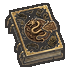
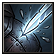

设计令牌 v2 · 原版同构
外壳一律用原版贴图与原版字色，武侠只放在内容上——玩家从大地图点进人物界面，不应感觉换了一个游戏。
一 · 为什么 v1（以及现有 mod 皮肤）显得突兀
逐项对照原版 data_001.dat 里的 ui/colors.css、ui/fonts.css 与 gfx/ui/skin 贴图
| 维度 | 原版 | v1 / 现有 mod |
|---|---|---|
| 底色明度与色温 | 暖棕皮革，约 #2d2117，有明显颗粒与压边 | 近黑冷乌木 #15100b（现有 wx_background_inventory 同样偏冷偏黑） |
| 文字颜色 | 橙金 #dda21f / 浅褐 #d7b174 / 斜体褐 #bd9d71 / 红 #CD2626，统一 1px 黑投影 | 骨白、石青、琥珀、蓝紫品阶色——原版里都不存在 |
| 控件 | 位图贴图：凸起的 button_01~05、button_tab、压花 list_item、格位 inventory_slot、橙色光晕 inventory_highlight | 1px 细线框、胶囊标签、开关、分段按钮——像网页后台 |
| 信息密度 | 正文 1.4~1.8rem，元素稀疏，细节全进提示框 | 正文 1.1rem，卡片 + 角标 + 进度条层层叠 |
| 阅读面 | 提示框是浅色羊皮纸 + 深蓝墨字 #010035；弹窗是木板 + 铁角 | v1 把提示框做成深色；现有 mod 在面板里整面铺浅宣纸 #eae0c8 |
| 天赋页手法 | 圆形图标直接摆在底上，选中=细金圈，锁定=33% 透明 | 方框卡片 + 自绘八角铜盘 |
二 · 总原则：外壳原版，内容武侠
每个界面元素先问"原版用什么画它"，有就直接用同名贴图；只有内容层才换成武侠
外壳（保持原版）
- 背景、面板、按钮、页签、格位、列表框、滚动条、勾选框、输入框、进度条
- 提示框羊皮纸、弹窗木板、升级弹窗的行结构
- 字色字号、投影、选中 / 悬停 / 禁用的表现方式
- 交互：左键查看、右键快捷、拖拽、橙色光晕＝可以操作
内容（武侠化）
- 武学 / 招式 / 丹药 / 典籍图标（mod 已有美术）
- 标题用宋体（汉化包自带 Noto Serif SC，对应原版 Cinzel）
- 称谓：穴位、重数、火候、散功、内息、藏经阁
- 少量点缀：经络金线（原版 line_gold.png）、角色纹章
- 不再新增任何底色、描边色、语义色
三 · 原版色板
全部取自原版 ui/colors.css 与 Squirrel 常量；mod 只使用这些值
深色底上的文字
#dda21f | 标题 · 数值 · 按钮字 · 人名 |
#d7b174 | 标签 · 正文 |
#bd9d71 | 说明（斜体） |
#a7a7a7 | 禁用 |
#CD2626 | 负值 · 警告（散功、换兵） |
#d6dbe9 | 格位数量角标 |
rgb(129,50,24) | 按钮选中底色 / 选中行 |
羊皮纸上的文字（提示框 / 事件）
#010035 | 墨字（标题与正文） |
#135213 | 正值（Const.UI.Color.PositiveValue） |
#8f1e1e | 负值（Const.UI.Color.NegativeValue） |
资源条（原版贴图，勿重绘）
| inventory_bar_fill_health_127 | 气血 |
| inventory_bar_fill_fatigue_127 | 内息（=疲劳，正向显示） |
| inventory_bar_fill_action_127 | 行动力 |
| inventory_bar_fill_morale_127 | 战意 |
四 · 字体与字号
中文沿用汉化包已加载的两套字体，不再额外打包 14MB 的明刻体
| 用途 | 字体 | 字号 | 示例 |
|---|---|---|---|
| 人物名 / 弹窗标题 | Noto Serif SC SemiBold（≈ Cinzel-Bold） | 2.2rem | 洗经伐髓 |
| 页签 / 书名 | 同上 | 1.6~1.9rem | 《清风连环剑》 |
| 正文 / 标签 | FreeUniversal（拉丁数字）+ Noto Sans SC | 1.4rem | 武艺 +4 招架 +2 身法 112 |
| 说明 | 同上，斜体 | 1.35~1.4rem | 清风剑派入室弟子的看家剑法。 |
| 角标 | 同上 | 1.2~1.3rem（最小） | 3/5 二重 ×2 |
五 · 贴图组件清单
左列为原版文件名（游戏内 coui://gfx/ui/skin/ 下直接引用），右列为实际效果
| 组件 | 原版贴图 | 尺寸 (rem) | 效果 |
|---|---|---|---|
| 主按钮 | button_01_default / hovered / inactive | 17.5 × 4.3 | 洗经伐髓 不可用 |
| 短按钮 | button_02_* | 9.8 × 4.3 | 研习 已习 |
| 图标按钮（筛选） | button_03_* + 原版 buttons/filter_*.png 或武学纹章 | 5.2 × 4.1 |   |
| 页签 | button_tab_default / hovered | 17.4 × 4.3 | 兵甲行囊武学修为 |
| 格位 / 可操作光晕 / 选中圈 | inventory_slot · inventory_highlight · perks/selection_frame | 6.4~7.4 |  23/3二重 |
| 属性条 | inventory_bar_empty_127 + inventory_bar_fill_*_127 | 12.7 × 2.2 | |
| 经验 / 火候条 | inventory_bar_experience_empty / fill | 19.6 × 2.6（可缩） | |
| 勾选 / 输入 | iCheck/flat/orange · text_input_300x40_* | 2.0 · 30 × 4 | 自动入阁 |
| 分隔线 | line_gold | — × 0.3 | |
| 阅读面板 | dialog_panel_01 | 拉伸 | 本页所有面板即此贴图 |
六 · 全局界面落点
以下全部是原版现成的形态，mod 只往里填武侠内容
《回锋惊鸿剑》
绝学 · 外功 · 剑 · 藏经阁 1 册
剑出如惊鸿回锋，后发先至，以反击架势见长。
右键：传授林沧海
提示框：保持原版羊皮纸 + 墨字。武学的三重效果、门槛、来源都放这里，界面本体只放图标。
换装调息
将以《游侠佩剑术》替换《清风连环剑》。
散功调息 2 天：内息上限 -15，回气 -3。
《清风连环剑》的二重小成会永久保留。
散功调息 2 天：内息上限 -15，回气 -3。
《清风连环剑》的二重小成会永久保留。
确定取消
弹窗：原版 popup_background 木板 + 铁角，标题宋体橙金，按钮 button_01。替换现有宣纸弹窗与"朱砂印关闭"。
商肆 / 战利品列表（原版 list_item_01）

《踏雪无痕》
门派上乘 · 轻功 藏经阁尚无此书
2,200 3/3
《黑风劈空刀》残页
凑齐可装帧成书
420 「新篇 / 阁藏」不再用彩色胶囊：未收藏的书写进描述，可拼合的残页用原版橙色光晕。
战斗技能栏（原版 tactical_skill_bg）
 4
4
4 3
3 4
4 4
4
内息消耗与四脉归属放进技能提示框（原版就这样显示疲劳消耗）；技能图标外框不再加四色描边。AP 条沿用原版 action 条，9/10/11 只在数字上体现。
七 · 现有 mod 改动清单（建议）
按"回归原版贴图"的方向，涉及的现有文件与选择器
| 文件 / 选择器 | 现状 | 建议 |
|---|---|---|
wx_global_theme.css · .character-screen-statuetes | 替换为冷黑乌木 + 武将雕像底图 | 改用 tools/build_wx_character_bg_v2.py 生成的新底图：中间原版棕色面板 + 放大的武侠雕像（尺度同原版，只露半身） |
wx_global_theme.css · 页签 .tab-button | wx_btn_tab_* 紫檀页签 | 删除，使用原版 button_tab |
wx_global_theme.css · 进度条 | wx_bar_qi / hp / ap 青色系 | 内息改用原版 fatigue 蓝条（只是方向反转），其余删除覆盖 |
mod_wuxia.css · .wx-panel / .wx-lib-panel | 整面浅宣纸 #eae0c8 + 深墨字 | 去掉底色，内容直接画在原版背景上；字色换原版三档 |
mod_wuxia.css · .wx-btn* / .wx-tag / .wx-status-pill | CSS 自绘按钮与彩色胶囊 | 改用原版 createTextButton(文字, 回调, 类名, 1|2|3) 生成按钮；胶囊改为纯文字 + 原版红/金 |
mod_wuxia.css · 字号 1.04~1.18rem | 偏小 | 正文 ≥ 1.4rem，角标 ≥ 1.2rem |
.wx-modal-* · .wx-cinnabar-close-btn | 宣纸弹窗 + 朱砂关闭 | 改用原版 createPopupDialog（木板 popup + button_01） |
.wx-sect-dialog（江湖名刺） | 宣纸长卷 | 改为原版 dialog_background + list_item 列表（同原版势力关系界面） |
.wx-item-slot-badge | 彩色胶囊角标 | 改为原版数量角标样式（白字黑描边）+ 橙色光晕 |
原版控件函数（createTextButton / createImageButton / createList / createPopupDialog）自带全部贴图与交互，优先调用它们，而不是手写 div + CSS。